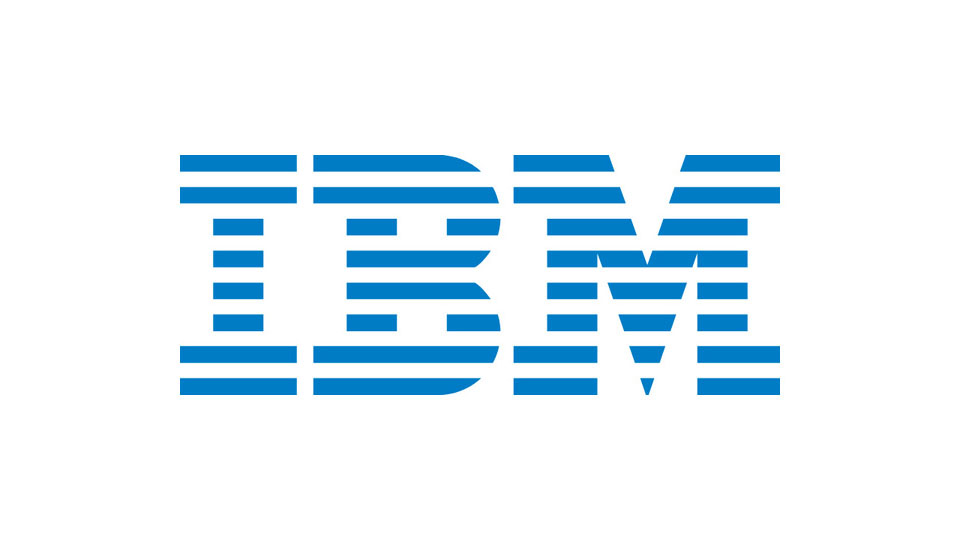
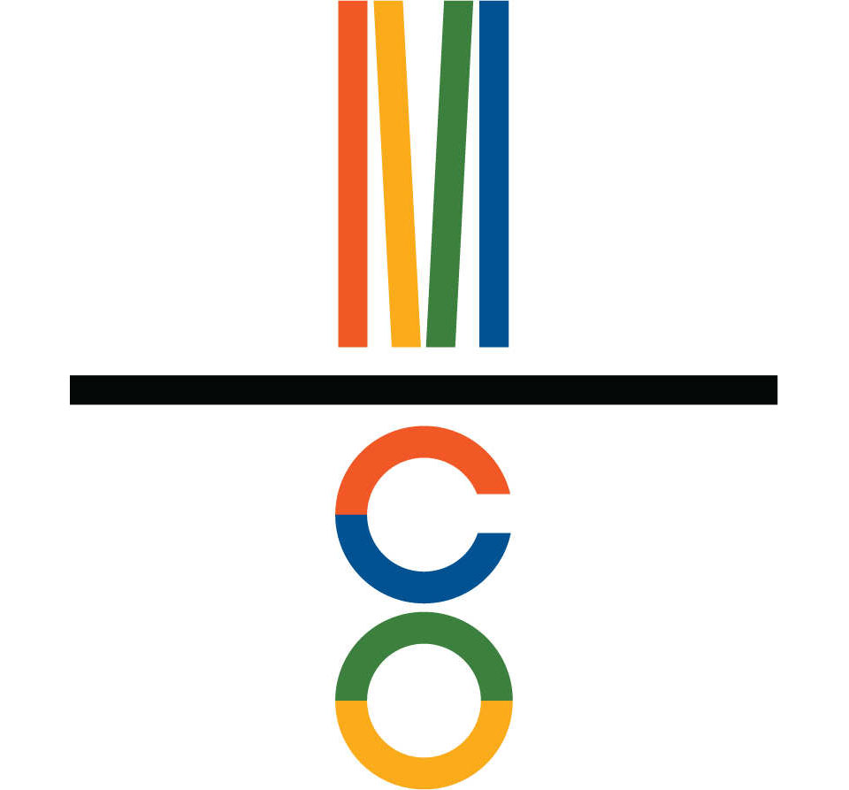
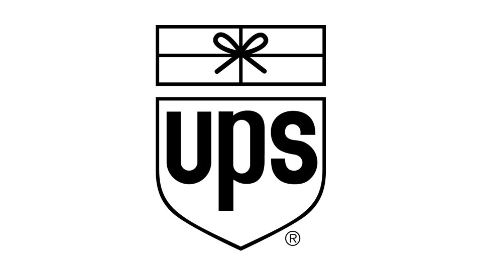
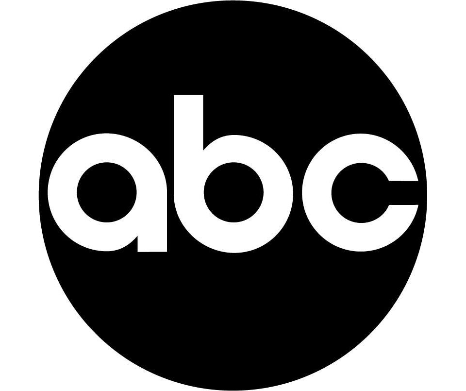
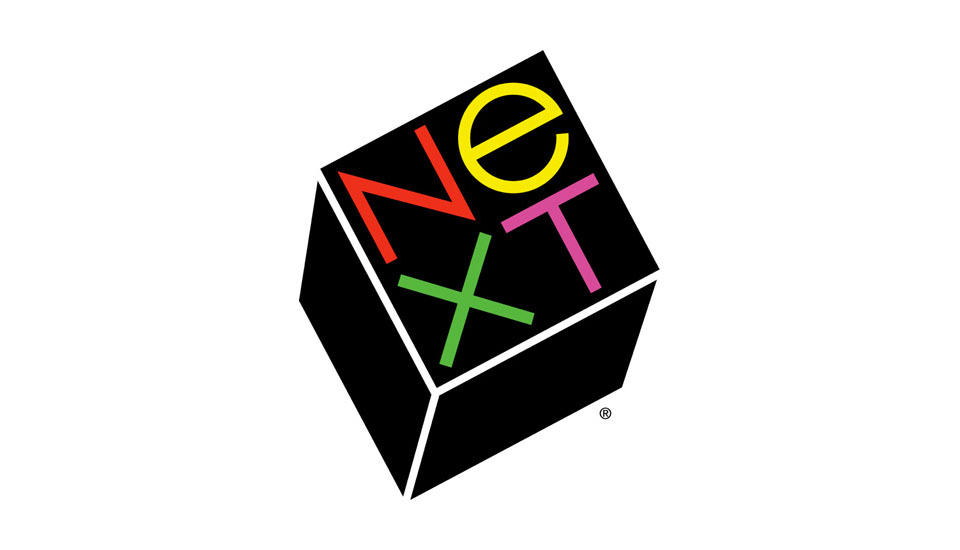
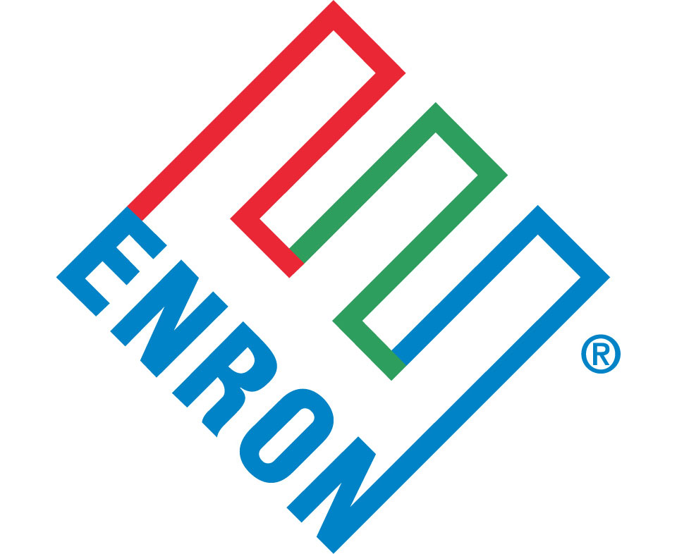

Intro
Paul Rand is one of the biggest names in the history of graphic design and has branded a number of the largest companies in the world such as IBM and ABC. He is one of the most influential designers in the world whose principles continue to inspire today.
He was born in Brooklyn, New York in 1914 and attended Pratt institute, Parsons and Art Student League but he considered himself self taught as a designer by learning the works of Cassandre and Moholy-Nagy. He later became a design teacher at Yale University.
Rand’s design principles started to develop when he met Bauhaus artist Laszlo Moholy-Nagy and he introduced Rand to art criticism. This made him look at the development of his designs in a different way and began questioning the meaning of branding and logos and how they are perceived or what they are capable of being.
"Among these young Americans it seems to be that Paul Rand is one of the best and most capable [. . .] He is a painter, lecturer, industrial designer, [and] advertising artist who draws his knowledge and creativeness from the resources of this country. He is an idealist and a realist, using the language of the poet and business man. He thinks in terms of need and function. He is able to analyze his problems but his fantasy is boundless." - Laszlo Moholy-NagyAfter the great depression in 1930’s, when businesses were starting to regain their success, the concept of a logo was a primary necessity for businesses. Rand was part of this movement to help corporations come up with original logos. Because of this the commercial industry was turned into professional graphic designers and lead the way for corporations to have smarter, simplistic logos.
In Rand’s unique style he used collage, photography, artwork and type to engage his audience. He wanted the viewer to think, interact, and interpret his type of communication. Using unconventional approaches through the use of shapes, space, balance, tension, variety, and contrast, Rand created a unique user experience.
Steve jobs once called Paul rand “the greatest living graphic designer.” although rand passed away in 1996 his philosophy and work is still very much with us. He was a pioneer in promoting the importance of the corporate logo as being one of the key ways consumers remember, relate to, or initially think about a company.
“A logo is a flag, a signature, an escutcheon, a street sign. a logo does not sell (directly), it identifies. A logo is rarely a description of a business.” - Paul RandPrinciples
“A logo derives meaning from the quality of the thing it symbolizes, not the other way around.”
The first of his four design principles looks at how a logo can be perceived by how important a company is,
“It is only by association with a product, a service, a business, or a corporation that a logo takes on any real meaning,” he said. “If a company is second rate, the logo will eventually be perceived as second rate. It is foolhardy to believe that a logo will do its job immediately, before an audience has been properly conditioned.”-Paul RandHe viewed the logo as a way of marking and not of meaning and therefore never assigned a responsibility to a logo.
His logo design for IBM (top 1956, bottom 1972) is a simple logo and is very recognizable today. With this principle in mind we can see that from this logo we aren’t sure what type of company IBM is. However the tone of voice of this design shows a strong professional company with a solid, grounded and balanced appearance, without having to use and intricate design work. Eliot Noyes was made director of IBM in 1956 and recognized that the company logo looked very old fashioned, even though the company was very high tech. In the second logo (1972) Rand added horizontal stripes through a blue typeface. This added speed and dynamism to the logo, which is what the company stood for at these times. When Rand was hired to revamp this logo he put in extra and redesigned the companies annual reports and letterheads to provide the company with a powerful and consistent brand.
Paul Rand had a working relationship with Mossberg and company for over 40 years. It first started when Mossberg and co printed an annual report for Cummins Engine Company, which Rand designed. This relationship last until his death and Mossberg and co printed his three design books. He created their logo in 1991 as a gesture of friendship. He created this bright logo to represent the quality of their printing. This logo is still used today. The quality of the company reflects on the logo and the brand qualities show in this simple design.
The subject matter of a logo need not match the subject matter of the business it represents. “The only mandate in logo design is that they be distinctive, memorable and clear.”
This principle stated that a logo could look like anything you want and doesn’t have to show core values of the company it represents.
“Surprising to many, the subject matter of a logo is of relatively little importance, and even appropriateness of content does not always play a significant role. This does not imply that appropriateness is undesirable. It merely indicates that a one-to-one relationship between a symbol and what it symbolized is very often impossible to achieve and, under certain conditions, objectionable. Ultimately, the only mandate in the design of logos, it seems, is that they be distinctive, memorable, and clear.” -Paul Rand The logo for UPS (1961) is very simplistic. In this case the logo has a meaningful symbol to the company by placing a package with a bow at the top of the logo. This immediately lets us know the mission of the company. This was placed over the previous logo, which had an expanded shield on top. This simplified the logo for UPS. The bow was later removed in 2003 because it held back the company from expansion but the shield and typeface were kept the same when they rebranded the company. This was one of the very few logos design by Paul Rand that used the companies subject in the logo. By placing the package at the top of this logo we can assume it is for a postal/ courier service.
Presentation is key
Rand placed a lot of importance on the presentation of design to a client and each design must tell a story tailored for the client.
“How to present a new idea is, perhaps, one of the designer’s most difficult tasks,” Rand said. “Everything a designer does involves presentation of some kind–not only how to explain (present) a particular design to an interested listener (client, reader, spectator), but how the design may explain itself in the marketplace…”-Paul Rand This logo for ABC (1962) is still used today, despite its slight redesign. This design shows a clear and cohesive advertising and communication. Considering ABC is a broadcasting company a simple logo showing company values is the perfect way to present a company and provides a clear and consistent message to the audience.
This logo has been carefully tailored to ABC and has such a strong representation of the company that it is still being used today.
“If you show them more than two ideas, you weaken your position. (…) You make one statement, and this is it. If you think it comes easily, it’s not easy. I can solve any problem in the world, but it does not always come instantly.”-Paul Rand Paul Rand designed the logo for Steve Jobs company NeXT which cost $100,000. Rand created a 100-page brochure detailing the brand, including the precise angle used for the logo (28°) and a new company name, NeXT. The presentation and the work put into the design and concept creation showed dedication and was an impressive amount of work for a logo design.
Steve Jobs on working with Rand: “I asked him if he would come up with a few options, and he said, ‘No, I will solve your problem for you and you will pay me. You don’t have to use the solution. If you want options go talk to other people.'”-Steve Jobs“Simplicity is not the goal. It is the by-product of a good idea and modest expectations.”
Rand’s principles, when used correctly, should produce simplistic designs.
Enron Company wasn’t a clever business venture. It had a made up name and an incomprehensible business practice but also had a logo that stood for balance and connectivity.
After Enron went under due to fraudulent business practices, the ‘E’ took a whole new meaning and was christened the crooked ‘E’.
When redesigning the logo for Alfred A. Knopf (1945) Rand took a different approach to other graphic designers who were working on the logo. He decided to work towards a modernist reductivism and created an incredibly simple, forward thinking symbol. It was based on the previous logo of a Russian dog, which looks towards the future without forgetting the past. This simplistic take on a previous company logo began his career in simplistic logo design.
Conclusion
Rand captured the relationship with a brand as a consumer. A logo needs attention, time, care, and a plan on how it will relate to the consumer. The designer creates branding guidelines on how the logo will appear in various places like ads, environments and products. Rand created a link between European modern art and American commercial art. He was also one of the pioneers in using a new formal language, creating professional relationships and using technical equipment. Rand broke the traditions of design that were set before him and decided to create new principles for him and for others.
Bibliography
- 99 Designs
- Paulrand.com
- Rednow
- Iconofgraphics